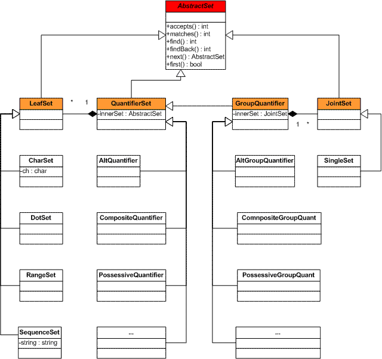

|
|
|
|
| ||||||||||
|
|
Regex Processing FrameworkIntroduction to Pattern Matching Revision History
Purpose
This document describes the Intended AudienceThe target audience for the document includes a wide community of engineers interested in using regular expression package and in further work with the product to contribute to its development. The document assumes that readers are familiar with Regular expressions [1, 2, 3], finite automata theory [4], basic compiler techniques [4] and the Java* programming language [5]. Documentation ConventionsThis document uses the unified conventions for the Harmony documentation kit. Introduction to Pattern MatchingTo analyze text in search of sequences matching preset patterns, you can choose from a variety of techniques, such as the wide-spread regular expressions (RE) [1], exact string matching, for example, the Boyer-Moore algorithm (BM) [6], and others. However, the RE engine is rather complex, and significantly impacts performance, whereas the exact string matching techniques have a limited application.
For example, the regular expression
In terms of the Finite Automata theory, which is the basis of regular
expression processing, a part of regular expression is a node.
The Harmony regex framework treats every distinctive part of a regular
expression and the whole expression as a node. Each node implements
the unified interface adjusted for a specific technique. For instance,
for the regular expression in the example, the Harmony framework
includes a special class SequenceSet, which has a unified interface
called AbstractSet Interface
The key feature of the Harmony regex framework the single super
interface, Characteristics
The
Methods Used
The Service Methods
Matching and Finding Methods
Class Hierarchy
Figure 1 shows the class hierarchy based on the
 Figure 1 displays only the basics of the regex framework. This framework also includes other nodes responsible for different optimizations. For more details, see the comments inlined in code. OptimizationsIn the current implementation, most optimizations are based on the node representation to improve efficiency of the framework. It is noteworthy that an optimal finite automaton is built during compile time, so that the constructed automaton does not spend additional time on decision-making overhead during match time. The regex framework optimizations improve different aspects, such as:
Usage ExamplesThis part on the document illustrates usage of the Harmony regex framework.
This example illustrates using the
class CharSet extends LeafSet {
...
public int accept(int strIndex, CharSequence testString) {
// checks that the current symbol of the input string is the one this
// instance represents and returns 1 (the number of
// accepted symbols) or -1 if accept fails:
return (this.ch == testString.charAt(strIndex)) ? 1 : -1;
}
...
}
Example 2
The following example demonstrates independent implementation of the
Note This changes the find procedure for nodes representing character sequences and at the same time does not affect the find-match algorithms of other types of nodes.
class SequenceSet extends LeafSet {
...
protected int indexOf(CharSequence str, int from) {
// Boyer-Moore algorithm
...
}
public int find(int strIndex, CharSequence testString,
MatchResultImpl matchResult) {
...
while (strIndex <= strLength) {
// call the fast search method instead of default implementation
strIndex = indexOf(testStr, strIndex);
if (strIndex < 0) {
return -1;
}
if (next.matches(strIndex + charCount, testString, matchResult) >= 0) {
return strIndex;
}
strIndex++;
}
return -1;
}
...
}
Example 3
This example illustrates how to turn the match procedure of the
class DotQuantifierSet extends LeafQuantifierSet {
...
public int matches(int stringIndex, CharSequence testString,
MatchResultImpl matchResult) {
...
// find line terminator, since .* represented by this node accepts all characters
// except line terminators
int startSearch = findLineTerminator(stringIndex, strLength, testString);
...
// run findBack method of the next node, because the previous
// part of the string is accepted by .* and no matter where
// the next part of pattern is found, the procedure works OK.
return next.findBack(stringIndex, startSearch, testString, matchResult);
}
}
References[1] Jeffrey E. F. Friedl., Mastering regular expressions, 2nd Edition., July 2002, O'Reilly, ISBN 0-596-00289-0 [2] McNaughton, R. and Yamada, H. Regular Expressions and State Graphs for Automata, IRA Trans. on Electronic Computers, Vol. EC-9, No. 1, Mar. 1960, pp 39-47. [3] Thompson, K., Regular Expression search Algorithm, Communication ACM 11:6 (1968), pp. 419-422. [4] Alfred V. Aho, Ravi Sethi, Jeffrey D. Ullman, Compilers, Principles Techniques and Tools, Addison-Wesley Publishing Company, Inc., 1985, ISBN 0-201-10088-6 [5] Java Technology site, http://java.sun.com [6] R. Boyer and S. Moore. A fast string searching algorithm. C. ACM, 20:762-772, 1977. [7] D.E. Knuth, .I. Morris, and V. Pratt. Fast pattern matching in strings. SIAM J on Computing, 6:323-350, 1977. * Other brands and names are the property of their respective owners. |
|||||||||
|
| ||||||||||
|
Copyright © 2003-2006, The Apache Software Foundation
| ||||||||||